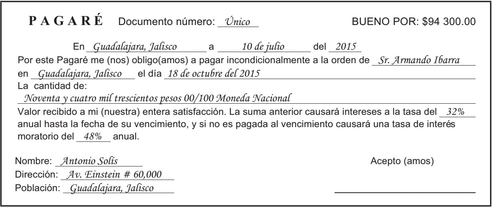
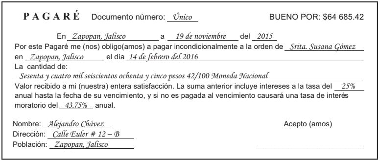

PagaréUn pagaré es un documento mediante el cual una persona se obliga a pagar a otra una cantidad determinada de dinero, con interés o sin él, en una fecha dada. La persona que hace la promesa de pagar es el deudor u otorgante, y la persona que cobra el pagaré es el beneficiario o tenedor. En todo pagaré intervienen los siguientes conceptos:
Fecha: es la fecha en la que se extiende el pagaré.
Fecha de vencimiento: es la fecha en la cual debe ser pagada la deuda.
Plazo: es el tiempo que transcurre entre la fecha en que se extiende el pagaré y la fecha de vencimiento.
Valor nominal: (BUENO POR:) es la cantidad marcada en el pagaré. Si en el pagaré se indica que el valor nominal causará intereses a determinada tasa, entonces el valor nominal es el capital obtenido en préstamo; en cambio, si en el pagaré se indica que el valor nominal incluye intereses a determinada tasa, entonces el valor nominal es el monto por pagar en la fecha de vencimiento.
Valor de vencimiento: (La cantidad de:) es la cantidad que debe ser pagada en la fecha de vencimiento. Esto es, el capital obtenido en préstamo más los intereses, si los hubiera. Si el valor nominal incluye los intereses, entonces el valor nominal es igual al valor de vencimiento.
En algunos pagarés no se especifica la tasa de interés, esto da lugar a una de dos situaciones: o bien el pagaré no produce intereses o los intereses ya han sido añadidos al capital, de tal manera que el documento muestra el valor de vencimiento.
Aunque existen diferentes diseños de pagarés, a continuación se muestra un pagaré típico.

En este pagaré, Antonio Solís es el deudor; Armando Ibarra es el beneficiario; el valor nominal del documento es por $94,300; 10 de julio del 2015 es la fecha en que fue expedido el pagaré; 18 de octubre del 2015 es la fecha de vencimiento. El plazo es de 100 días.
Ejemplo 1. Obtenga el valor de vencimiento del pagaré anterior.
Solución:
Días transcurridos: 10 de Julio al 18 de Abril del mismo año = 100 días
por lo tanto
P = 94,300
i = 32% anual
t = 100 días
\(F=P(1+ i \cdot t_1)\)
\(\displaystyle F=94,300\left [1+ \left(\frac {0.32}{360}\right) \cdot (100)\right]\)
\(F=102,682.22\)
Intereses moratoriosCuando una deuda no se paga en la fecha de vencimiento, empieza a ganar intereses llamados intereses moratorios, los cuales se deben calcular sobre el capital originalmente prestado, y no sobre el monto, ya que los intereses moratorios son interés simple.
Es usual que la tasa de interés moratorio sea de 50% más de la tasa normal aplicada, aunque ésta no es una regla general.
En el pagaré anteriormente mostrado, se observa que la tasa de interés moratorio es del 48% anual.
Ejemplo 1. Suponga que el pagaré anterior se liquidó 22 días después de la fecha de vencimiento. Calcule el interés moratorio y la cantidad total por pagar.
Solución:
P = 94,300
i = 48% anual
t = 22 días
\(\displaystyle I_{moratorio}=P\cdot i \cdot t\)
\(\displaystyle I_{moratorio}=(94,300)\left ( \frac{0.48}{360}\right)(22)\)
\(\displaystyle I_{moratorio}=2,766.13\)
Cantidad total a pagar = Capital + Intereses ordinarios + Intereses moratorios
Esto es,
Cantidad total por pagar = Monto + Intereses moratorios
Cantidad total por pagar = 102,682.22 + 2,766.13 = $105,448.35
Descuento racional y realEl proceso de pagar anticipadamente un pagaré, como se muestra en el ejemplo , recibe el nombre de descuento racional. El nombre se debe porque se lleva a cabo el descuento de los intereses correspondientes a los días que faltan para que venza el documento.
A la diferencia entre el valor de vencimiento (F) de la deuda y el valor presente (VP) se le llama descuento real o descuento justo.
\(F-VP=Descuento\, real\)
Por ejemplo si F = 64,685.42, VP = 62,389.15 el Descuento real será
$64,685.42 – $62,389.15 = $2,296.27
La tasa de interés aplicable al descuento racional, llamada, tasa de descuento racional, puede ser la tasa original empleada en el cálculo del monto, o bien, se puede utilizar una tasa de descuento racional diferente, vigente en el mercado financiero al momento de llevar a cabo el proceso de descuento racional.
Ejemplo 1. Alejandro Chávez firmó el 19 de noviembre del 2015 el pagaré mostrado a continuación, el cual ampara un préstamo en efectivo. Calcule,
a) la cantidad que pidió prestada el señor Chávez y
b) la cantidad que debe pagar el señor Chávez si desea saldar su deuda el 23 de diciembre del 2015.
c) Resuelva el inciso b) si la tasa de descuento racional fuera del 22% anual.

Solución:
Este pagaré, a diferencia del pagaré mostrado anteriormente, muestra un valor nominal igual al valor de vencimiento o monto, ya que la cantidad indicada incluye los intereses.
a) Del 19 de noviembre del 2015 al 14 de febrero del 2016, que es la fecha de vencimiento, hay 87 días. Por lo tanto,
F = 64,685.42
i = 25% anual
t = 87 días
\(\displaystyle P=\frac {F}{1+i\cdot t}\)
\(\displaystyle P=\frac {64,685.42}{1+\left (\frac {0.25}{360}\right )\cdot (87)}\)
\(\displaystyle P=61,000\)
b) Si Alejandro Chávez pagara en la fecha de vencimiento (14 de febrero del 2016) tendría que pagar $64,685.42, ya que el valor nominal incluye los intereses, pero como decide liquidar de manera anticipada su deuda, tiene derecho a la consiguiente reducción de intereses, esto es, no pagar los intereses correspondientes del 23 de diciembre del 2015 al 14 de febrero del 2016. Por lo tanto, la cantidad por pagar deberá ser el valor presente del documento 53 días antes de su vencimiento.
F = 64,685.42
i = 25% anual
t = 53 días
\(\displaystyle VP=\frac {F}{1+i\cdot t}\)
\(\displaystyle VP=\frac {64,685.42}{1+\left (\frac {0.25}{360}\right )\cdot (53)}\)
\(\displaystyle VP=62,389.15\)
c) En este caso se utiliza una tasa de interés diferente de la usada originalmente en el pagaré. Observe que la tasa de interés utilizada, menor que la tasa de interés original, hace que el valor presente sea mayor que el anterior. ¿Qué pasaría si la tasa de descuento racional fuera mayor que la tasa de interés original del 25%?
\(\displaystyle VP=\frac {F}{1+i\cdot t}\)
\(\displaystyle VP=\frac {64,685.42}{1+\left (\frac {0.22}{360}\right )\cdot (53)}\)
\(\displaystyle VP=62,656.06\)
Ejemplo 2. ¿Cuál es el precio de contado de un teléfono celular que se paga dando un enganche del 15% del precio de contado y se firma un pagaré a 3 meses de plazo por $2,226.27 que incluye intereses a una tasa del 38.35% anual?
Solución:
F = 2,226.27
i = 38.35% anual
t = 3 meses
En primer lugar se obtiene el valor presente del pagaré, el cual representa la cantidad que se queda a deber después de pagar el enganche, es decir, el saldo por pagar.
\(\displaystyle VP=\frac {F}{1+i\cdot t}\)
\(\displaystyle VP=\frac {2,226.27}{1+\left (\frac {0.3835}{12}\right )\cdot (3)}\)
\(\displaystyle VP=2,031.50\)
Si PC es el precio de contado del teléfono, entonces se tiene
PC - enganche = saldo por pagar
Esto es,
PC −15% de PC =2,031.50
PC −(0.15)( PC) = 2,031.50
0.85 PC = 2,031.50
Por lo tanto,
PC = 2,031.50 / 0.85
PC = 2,390
Ejemplo 3. Saúl compró un automóvil en una agencia automotriz, y el vendedor le dio a elegir entre dos formas de pago:
1) Dar $210,000 de contado o
2) Dar un pago inicial del 20% sobre el precio de contado y firmar un pagaré a 90 días por $175,770.
Saúl dispone del dinero para pagar de contado, pero piensa que es mejor pagar de acuerdo con la segunda opción y, mientras se cumple el plazo, invertir el dinero que sobra después de hecho el pago inicial en una sociedad de inversión a 90 días de plazo que le da el 13.4% anual de interés simple. ¿Qué forma de pago resulta más ventajosa para Saúl?
Solución:
Debido a que el dinero tiene un valor que depende del tiempo, una unidad monetaria (peso, dólar, etc.) en una fecha, no es directamente comparable con la misma unidad monetaria en otra fecha. Por tal motivo, las dos alternativas de pago no pueden ser comparadas como están expresadas en el enunciado, pues se refieren a momentos diferentes.
A continuación se muestran dos formas de resolver el problema.
Solución 1
Saúl da un pago inicial de $42,000 y le queda $168,000 para invertir.
El valor futuro de esta inversión es:
P = 168,000
i = 13.4% anual
t = 90 días
\(F=P(1+ i \cdot t_1)\)
\(\displaystyle F=168,000\left [1+ \left(\frac {0.134}{360}\right) \cdot (90)\right]\)
\(F=173,628\)
Pasados los 90 días, Saúl recibirá $173,628. Esto significa que le harán falta $2,142 para completar los $175,770 que debe pagar. Por lo tanto, le conviene pagar de contado y ahorrarse $2,142.
Solución 2
Se comparan los valores presentes de las cantidades asociadas a las alternativas. El valor presente de $175,770 es:
F = 175,770
i = 13.4% anual
t = 90 días
\(\displaystyle VP=\frac {F}{1+i\cdot t}\)
\(\displaystyle VP=\frac {175,770}{1+\left (\frac {0.134}{360}\right )\cdot (90)}\)
\(\displaystyle VP=170,072.57\)
Esto significa que Saúl tendría que invertir $170,072.57 en el momento actual para obtener $175,770 dentro de 90 días. Pero Saúl dispone de sólo $168,000 en el momento actual; le faltan $2,072.57.
De nuevo, es evidente que le conviene pagar de contado y ahorrarse $2,072.57.
La diferencia en las cantidades ahorradas en uno y otro método de solución se debe a lo siguiente: $2,142 es el ahorro dentro de 90 días; mientras que $2,072.57 es la cantidad ahorrada en el momento actual.
En otras palabras, $2,142 son el valor futuro de $2,072.57 al 13.4% de interés simple y 90 días de plazo:
P = 2,072.57
i = 13.4% anual
t = 90 días
\(F=P(1+ i \cdot t_1)\)
\(\displaystyle F=2,072.57\left [1+ \left(\frac {0.134}{360}\right) \cdot (90)\right]\)
\(F=2,142\)
Si hubiera algún tipo de inversión con una tasa de interés diferente, la decisión podría ser otra.
Haz click en el siguiente enlace para ver tutoriales relacionados con el tema.